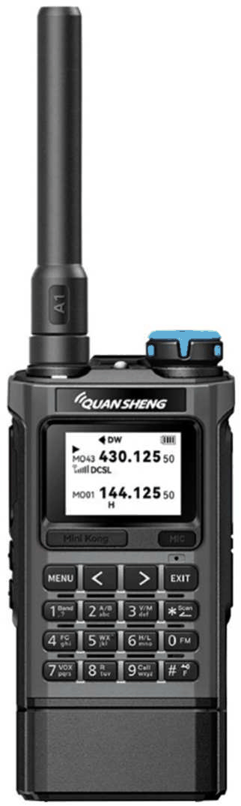
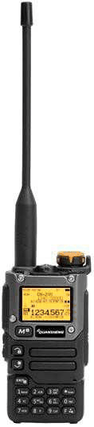
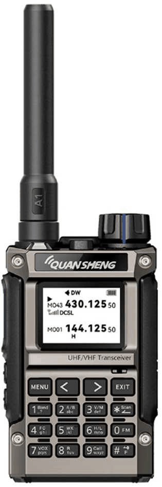
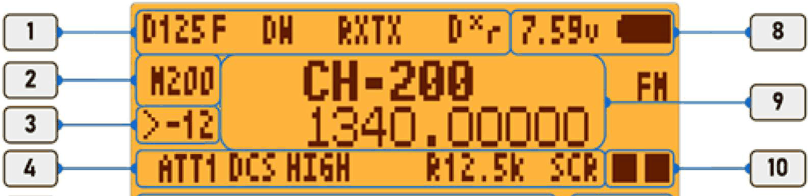
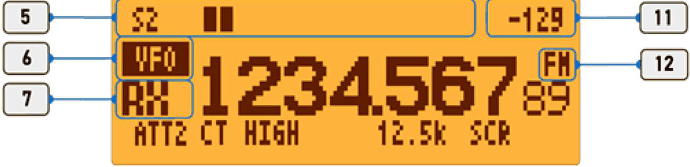
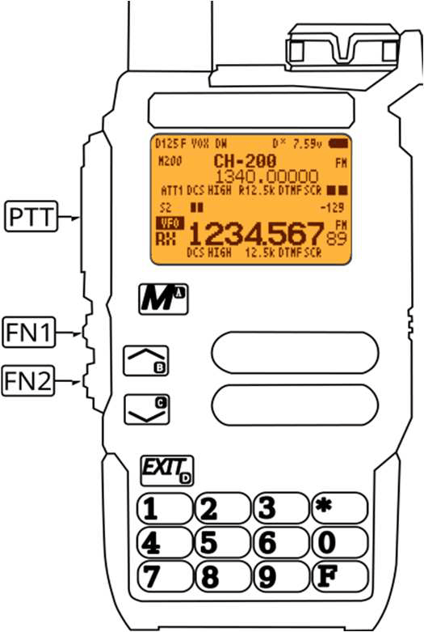
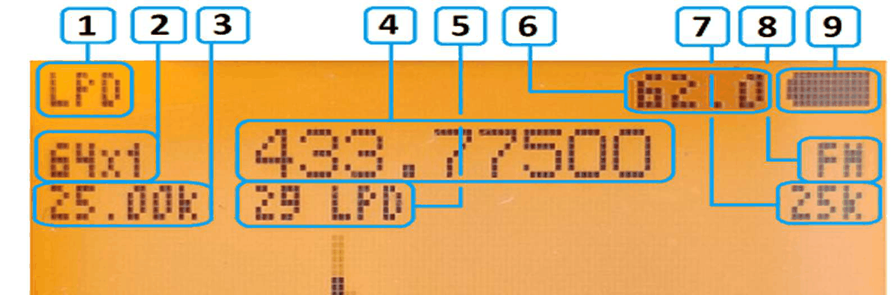
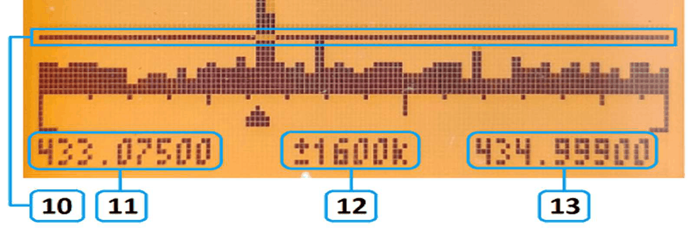
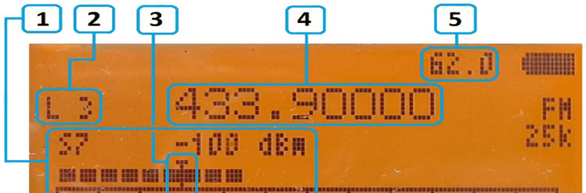
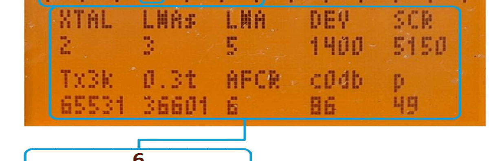

¿Y bien, lo has roto? Ya va siendo hora de abrir el manual.
Karina (autumn rain) — QUANSHENG UV-K5 (V3), UV-K1, UV-K1(8)



Firmware KARINA (autumn rain) — descripción#
Versión 21.08.2026
(el número de versión = día.mes del lanzamiento) Las adiciones, aclaraciones y novedades están marcadas con color
!!! GUARDE SUS CALIBRACIONES DE FÁBRICA !!! después de flashear hay que actualizar la calibración
y a continuación hacer un reset: menu -> reset -> vfo
1. PANTALLA PRINCIPAL.#


1. Línea de estado / pueden mostrarse los siguientes símbolos:
S – el ahorro de batería está activado – véase la sección 2, punto 14; L – el teclado está bloqueado (Lock) – véase la sección 3, punto F (F largo); F - paso al modo de opciones – véase la sección 3, punto F (F corto); DW – modo de doble escucha – véase la sección 2, punto 17; A - ajuste automático del subtono de la última recepción – véase la sección 3, punto 0 (F + 0 muy largo); D - volumen dinámico – véase la sección 3, punto 9 (9 largo); r - aleatorizador de frecuencia y de potencia de TX – véase la sección 3, punto 8 (F + 8 muy largo); RXTX – baliza automática – véase la sección 3, puntos 1, 2, 3; x - captura de frecuencia en segundo plano – véase la sección 3, punto 1 (1 largo); Mientras se recibe una señal con subtono, la línea de estado muestra el tono analógico CTCSS (como número) o el código digital DCS (en la forma D125)
2. Selección del receptor / actividad / modo VFO/MR 3. Indicador de la última recepción / desviación de frecuencia de la última recepción (x10 Hz) 4. Parámetros del canal / pueden mostrarse los siguientes símbolos:
ATT 1, ATT 2 - atenuador activado (activar / cambiar / desactivar rápido - * ) DCS, CT - tipo de subtono configurado – véase la sección 2, punto 4; HIGH, MID, LOW – potencia de TX actual (cambio rápido – 6 largo) R - modo reverse activado – (8 largo); 12,5k, 25k - ancho de banda del canal – (cambio rápido F+7) SCR - scrambler analógico (2.3. Menú principal, punto 11) 5. Escala del S-metro 6. Selección del receptor / actividad / modo VFO/MR 7. Recepción – RX / Transmisión - TX
8. Indicador de carga de la batería 9. Nombre del canal de memoria / frecuencia 10. Lista de escaneo asignada (- primera, - segunda) - el canal está en ambas listas de escaneo - el canal no está en ninguna lista de escaneo 11. Nivel de señal del S-metro 12. Tipo de modulación - AM/FM/SSB (se cambia con 7 largo)
2. MENÚ.#
2.1. Navegación por el menú.
Utilice las teclas de flecha ▲ / ▼ , o introduzca el número del punto directamente en el teclado (01, o 22…) ¡¡¡Atención!!! Los puntos de menú 2, 3, 4, 5, 6, 7, 8, 9, 10, 26 y 39 se configuran de forma individual para las bandas A y B y para cada banda de frecuencia (Banda).
2.2. Bandas de frecuencia de trabajo (Bandas):
1.00000 – 108.99990 MHz; 109.00000 – 139.99990 MHz; 140.00000 – 199.99990 MHz 200.00000 – 279.99990 MHz; 280.00000 – 399.99990 MHz; 400.00000 – 669.99990 MHz 700.00000 – 3200.99990 MHz. La precisión del valor de frecuencia depende del paso configurado en el punto 2 (Step).
2.3. Menú principal.
1. Sql – nivel de sensibilidad del silenciador (squelch), configurado simultáneamente para la banda superior (A) y la inferior (B) (véase también la descripción del punto 35) 2. Step – paso de frecuencia. (para CB = 5/10; Satcom, Avia = 5/25; todo lo demás = 6.25/12.5). 3. Power – potencia de TX del transceptor. High / Middle / Low. 4. R_DCS – subtono codificado digital para recepción (Digital-Coded Squelch), si la función está activada, el silenciador se abrirá solo después de recibir este subtono. (se aplica solo a la modulación FM) 5. R_CTCS – subtono analógico para recepción (Continuous Tone-Coded Squelch System), si la función está activada, el silenciador se abrirá solo después de recibir este subtono. (se aplica solo a la modulación FM) 6. T_DCS – subtono codificado digital para transmisión, si la función está activada, el transceptor enviará este tono. (se aplica solo a la modulación FM) 7. T_CTCS – subtono analógico para transmisión, si la función está activada, el transceptor enviará este tono. (se aplica solo a la modulación FM) 8. Shift – signo del desplazamiento de la frecuencia de transmisión (split RX/TX) +/–/upc. (upconverter - cuando se utiliza un convertidor descendente) 9. Offs – valor del desplazamiento de la frecuencia de transmisión. 10. W/N – el ancho de banda que utiliza el transceptor:
- 25 kHz - Wide
- 12.5 kHz - Narrow.
11. Scrambl – scrambler analógico transforma la señal de voz original cambiando su amplitud, su frecuencia y sus parámetros temporales en distintas combinaciones (1-10 – enmascara la voz, 11-20 – cambia el tono de la voz).
12. BusyCL – la transmisión se bloquea en un canal ocupado: mientras el transceptor está recibiendo una señal, pulsar PTT no inicia la transmisión. 13. Mem_ch – guardar la frecuencia y los ajustes en un canal de memoria cualquier cambio de los ajustes del canal activo (en modo canal (MR)) se guarda solo si se confirma a través de este punto del menú; si no se hace, los ajustes del canal vuelven a los guardados anteriormente en cuanto se cambia a otro canal o se apaga/enciende la radio. 14. Save – ahorro de batería (relación entre el tiempo activo y el tiempo de reposo). MAX – ahorro máximo x10 El máximo ahorro de energía se consigue con Save=Max junto con DW=OFF. El ajuste óptimo es 1:3. Cuando está activado, el símbolo S aparece de vez en cuando en la línea de estado (véase también la descripción del punto 25 Roger (Roger=5)). 15. VOX – TX activada por voz (1-10 sensibilidad del micrófono) al entrar en el menú con «M», VOX se bloquea para evitar que se dispare al pulsar las teclas. 16. Light – retroiluminación de la pantalla. Se configura en 2 etapas: tiempo y brillo: AJUSTE DEL TIEMPO DE RETROILUMINACIÓN: OFF – oscuridad total (incluso los LED de RX/TX permanecen apagados); KEY – lo mismo que OFF, pero la retroiluminación se enciende durante 5 segundos al pulsar una tecla frontal; 2, 5, 10, 20 sec, 2 min – tiempo de retroiluminación. La retroiluminación permanece encendida el tiempo seleccionado, pero se apaga solo después de que haya terminado la recepción; ON – retroiluminación permanentemente encendida. AJUSTE DEL BRILLO DE LA RETROILUMINACIÓN: bri 0-7 – ajuste del brillo de la retroiluminación. Para configurarlo, ajuste primero el tiempo de retroiluminación, después entre de nuevo en el punto Light y ajuste el brillo. 17. DW – modo de doble escucha para las frecuencias de las bandas A y B:
- Chan_A / Chan_B – activar la función DW.
- SCAN – la banda activa A / B sigue siendo la de trabajo, la otra escanea los canales de la lista de escaneo activa.
- OFF – desactivar el modo de doble escucha.
ATENCIÓN: cuando la captura en segundo plano está activada (pulsación larga de la tecla 1), DW=ON se activa automáticamente (la frecuencia capturada se muestra en VFO-B). 18. Beep – señales acústicas al encender el transceptor, cuando la batería está baja y cuando se detecta una frecuencia en el modo de captura de frecuencia en segundo plano (las pulsaciones de teclas no van acompañadas de sonido). 19. TxTime – límite de la duración de la transmisión continua y del funcionamiento de la baliza. 20. Scan – el método de detención o reanudación del escaneo (este ajuste se aplica también al analizador de espectro):
- CO – el escaneo se reanuda después de que desaparezca la portadora (óptimo);
- TO – reanudar el escaneo después de una pausa de 5 segundos (en el espectro una señal fuerte puede desaparecer / atascarse periódicamente, el «efecto de congelación»);
- SE – detener completamente el escaneo en cuanto se detecta una señal. Las teclas ▲/▼ reanudan el escaneo (cuando se selecciona SE en el espectro, las frecuencias que ya han sido recogidas en el «Loot» no se vuelven a «buscar»).
21. Name – seleccionar el estilo con el que se muestran los nombres de los canales (opciones disponibles: NAME - nombre, CHAN - canal, FREQ - frecuencia, NAME+F - nombre + frecuencia).
22. STE – elimina el siseo/ruido/«pfft» al final de la transmisión. (Al soltar PTT se emite al aire un tono corto de 55 Hz que indica a los demás transceptores que la transmisión ha terminado y que deben silenciar el audio.)
23. Mic – sensibilidad del micrófono:
- 0 – micrófono sensible sin umbral (óptimo con tx_filt = 1-2);
- 1 – Mínima – (óptimo con tx_filt = 0-1);
- 2 – Media (óptimo con tx_filt = 1);
- 3 – Reforzada (mejor para contactos a larga distancia; a corta distancia aparece eco) (óptimo con tx_filt = 1);
- 4 – Reforzada recomendada *(*para un entorno silencioso, óptimo con tx_filt = 1);
- 5 – MAX (se oye el ruido de fondo ambiental) (óptimo con tx_filt = 1).
24. SList – seleccionar la lista de escaneo 1 / 2 / 3 (3 - escanea todos los canales de la memoria)
Añadir / quitar el canal activo a las listas de escaneo o de ellas (solo se puede añadir / quitar en SList 1 y 2) se hace con la combinación F+1 desde la pantalla principal, lo que se confirma con la aparición / desaparición del icono del punto 9 de la p.2.
¡Mientras SList 3 está activa, no se pueden añadir ni quitar canales!
Además, con F+9 se pueden asignar 2 canales de escaneo prioritarios; para más detalles véase la sección «FUNCIONES DE LAS TECLAS» (9 CALL).
25. Roger – tono audible al final de la transmisión (2 opciones de trabajo a elegir)
Los Roger adicionales 3-55 son funciones de prueba – no los recorra sin motivo:
Roger 3 - autocaptura de frecuencia con mayor alcance (véase la sección «Funciones de las teclas»);
Roger 4 – Desactiva el atenuador automático (OFF);
Roger 5 - modo con ahorro de energía mejorado + aceleración de: la conmutación de dw, la medición de subtonos y la comprobación del sql en powersave. Un algoritmo de funcionamiento distinto.
Roger 6 – Corrección inversa de la frecuencia de TX por AFC (para compensar el desplazamiento Doppler);
Roger 7 – Corrección directa de la frecuencia de TX por AFC
(Ajuste automático de la frecuencia de TX por afc. Tras recibir una señal, la radio memoriza la desviación de frecuencia y corrige la transmisión. La tecla EXIT restablece la corrección.)
Roger 8 – AGC por software de AM_fix en FM.
26. Modulat – modo de modulación FM / AM / SSB (FM por defecto, funciona solo en recepción).
27. AM_fix – activa el AGC de AM para mejorar la recepción de señales AM (cuando esta función está activa, los registros no se ajustan en el modo «captura de frecuencia» del espectro si está configurada la modulación de amplitud).
28. AMf_lvl – ajusta el nivel del AGC de AM (en algunas condiciones reduce el ruido).
29. LNA_hi – activa el amplificador de bajo ruido (en entornos con interferencias fuertes es mejor desactivarlo).
Cuando está desactivado, el espectro es «plano»; cuando está activado, el espectro «cobra vida».
Véase la descripción adicional del valor MAN en la descripción de los registros del modo analizador de espectro.
30. rx_filt – cambia el tono de la señal recibida *(1 - realza los graves, 2 y 3 - cortan los graves y realzan los agudos (**3 es el óptimo**)*
31. tx_filt – cambia la modulación en transmisión (preajuste para el registro Tx3k) 0 – de fábrica, 1 – la reduce *(óptimo)**, 2, 3 - aumentan la modulación; en el transceptor receptor puede aparecer un chillido o un recorte del silenciador.*
Si surgen problemas, ponga los puntos de menú 30, 31 = 1, reinicie el transceptor y después póngalos = *0****)*
32. Del_ch – borrar un canal de memoria
33. Reset – restablecer la configuración del transceptor:
- VFO – restablecer los ajustes del transceptor y las bandas VFO
- ALL – restablecer todos los ajustes del transceptor, incluido el borrado de los canales
(las calibraciones no se ven afectadas por esto).
34. Re-name – renombrar un canal ( - carácter siguiente) – para los canales recién guardados, si no se ha puesto nombre, durante el escaneo se muestra como «,,,,,,,,,»; al introducir un nombre, salte los caracteres vacíos con
35. Preset – Seleccionar el preset de trabajo que se carga por defecto (0, 1, 2) para el funcionamiento de la radio. ¡Las calibraciones y la configuración son individuales para cada preset!
(para cada preset, en la primera carga hay que realizar un borrado completo de la memoria (encender manteniendo pulsadas PTT+EXIT), después cargar las calibraciones y la configuración (si hace falta) y ajustar todos los puntos que necesite).
Para cambiar sobre la marcha al preset que necesite, encienda la radio manteniendo pulsada la tecla correspondiente 0 / 1 / 2.
36. Sql 2 – nivel de sensibilidad del silenciador para la banda B.
Cuando se ajusta SQL (punto 1 del menú), el ajuste se aplica a la vez a las bandas A y *B**.*
Cuando se ajusta SQL2, se aplica un ajuste independiente a la banda *B**. (El ajuste de la banda* B se restablece cada vez que se cambia *SQL*** en el punto 1.)
37. Loot – el «menú Loot» recoge automáticamente las frecuencias en las que hubo recepción durante el escaneo en el espectro y en VFO (128 entradas – al desbordarse se sobrescriben las más antiguas. Ordenadas desde la encontrada más recientemente; se aplica un filtro de duplicados y se muestran los subtonos detectados)
Si la frecuencia ya está guardada en la memoria, se muestra el nombre del canal. (Si la frecuencia está almacenada dos veces en la lista de canales, se muestra el nombre del primer canal de la lista.)
También se muestra el tiempo transcurrido desde la última recepción.
Cuando se selecciona una entrada con la tecla *M**, la frecuencia actual se transfiere a la banda VFO activa.*
Guardar en memoria desde VFO se hace mediante el punto 13. Mem_ch
El «menú Loot» se borra después de reiniciar el transceptor.
2.4. Menú oculto.
Sin experiencia y sin los instrumentos necesarios no se recomienda cambiar los parámetros de los puntos 41-53 del menú oculto: cambiar estos puntos afecta a la calibración de la radio.
¡¡¡Cualquier ajuste de estos puntos se realiza bajo su propia responsabilidad!!!
¡Se recomienda encarecidamente hacer una COPIA DE SEGURIDAD (BACKUP) de los ajustes y de las calibraciones de la radio antes de cambiarlos!
El menú oculto aparece si enciende la radio manteniendo pulsadas al mismo tiempo PTT y la tecla lateral de función FN1, y después suelta todas las teclas (suelte PTT + FN1 cuando se apague la pantalla de inicio).
38. F Lock – seleccionar el plan de frecuencias que permite la transmisión (la introducción de una frecuencia para recepción sigue estando abierta en todo el rango de 15.0 MHz – 1349.9999 MHz):
- FCC (144-148, 420-450);
- CE (144-146, 430-440);
- GB (144-148, 430-440);
- LPD PMR (433-435, 446-447) - esto bloquea además todas las teclas frontales excepto las flechas ▲/▼ (después de reiniciar el transceptor)
Para una banda en modo de frecuencia *VFO**, se puede introducir una frecuencia desplazándose con* ▲ / ▼ (dentro de una banda VFO).
Para una banda en modo canal *MR**, solo se pueden seleccionar canales preprogramados desplazándose con* ▲ / ▼ ;
- OFF (136-240, 280-500) – el rango de frecuencias de fábrica.
39. Tx All – seleccionar el modo de bloqueo de la transmisión:
- DEFAULT – transmisión en las bandas seleccionadas en el punto de menú anterior 36;
- DISABLE – prohibir la transmisión en todas las frecuencias;
- ENABLE – permitir la transmisión en todas las frecuencias.
40. Sat – reajusta los filtros de recepción para la banda de frecuencias Satcom
- OFF – si las bobinas se han modificado para la recepción Satcom;
- ON – si no se ha realizado ninguna modificación.
41. F_Corr – corrección de la frecuencia del oscilador de referencia
42. r.Open – ajuste manual del nivel de APERTURA del SQL por RSSI.
43. r.Close – ajuste manual del nivel de CIERRE del SQL por RSSI.
44. n.Open – ajuste manual del nivel de APERTURA del SQL por ruido.
45. n.Close – ajuste manual del nivel de CIERRE del SQL por ruido.
46. g.Open – ajuste manual del nivel de APERTURA del SQL por Glitch.
47. g.Close – ajuste manual del nivel de CIERRE del SQL por Glitch.
48. a – ajustes de servicio para las funciones de prueba del firmware.
49. b – ajustes de servicio para las funciones de prueba del firmware.
50. c – ajustes de servicio para las funciones de prueba del firmware.
51. d – ajustes de servicio para las funciones de prueba del firmware.
52. e – ajustes de servicio para las funciones de prueba del firmware.
53. PWR – potencia de TX, almacenada en las calibraciones (al entrar muestra 0; desplácese con ▲/▼ o pulse *EXIT*** - el valor se actualizará).
Para guardar un valor, seleccione primero la frecuencia / banda y el nivel de potencia que quiere ajustar (HIGH / MID / LOW). Después abra el punto de menú PWR, cambie el valor y pulse M para guardar.
¡¡¡El valor de PWR será distinto para el principio, el medio y el final de cada banda de frecuencias, y para cada nivel de potencia!!!
3. FUNCIONES DE LAS TECLAS.#
Pulsación corta – pulsar y soltar (estándar).
Pulsación larga – al menos 1 segundo (para la mayoría de las teclas equivale a la combinación «F + pulsación corta»).
F + pulsación muy larga – 5 segundos (hasta que parpadee el LED rojo).
3.1. Combinaciones de servicio.
Funciones disponibles al encender la radio manteniendo pulsadas determinadas teclas:
- PTT+FN1 – Entrar en el menú de ajustes oculto (véase la sección 2.4).
- PTT+EXIT – Borrado completo de la memoria (calibraciones, configuración, todos los ajustes) – debe hacerse con el cable DESCONECTADO; después del encendido mantenga las teclas pulsadas al menos 2 segundos.
- 0 – selección rápida del preset 0 en el momento del encendido (véase el punto de menú 35).
- 1 – selección rápida del preset 1 en el momento del encendido (véase el punto de menú 35).
- 2 – selección rápida del preset 2 en el momento del encendido (véase el punto de menú 35).
3.2. Teclas frontales.
M
- pulsación corta M – entrar en el Menú
- pulsación corta M – salir del punto de Menú actual, confirmando el ajuste
- pulsación larga M – entrar en el modo módem (FUNCIÓN DE PRUEBA).
▲/▼
- pulsación corta ▲/▼ – cambiar de canal / frecuencia según el paso configurado
- F+ pulsación corta ▲/▼ – cambiar de canal / frecuencia en pasos de 1 MHz
1 BAND
- pulsación larga 1 – captura de frecuencia en segundo plano (aparece una x en la pantalla)
Cuando la captura en segundo plano está activada, DW se activa automáticamente.
(Cuando se detecta actividad, la frecuencia capturada se copia en la memoria temporal de VFO2 (de forma provisional). Cualquier manipulación de VFO2 hace que la frecuencia capturada desaparezca. La frecuencia capturada se puede ver en el menú Loot.)
(Si está configurado el punto Roger=3 *(****también se recomienda poner* SQL=3, SAVE=1:3), la función trabaja como «captura de largo alcance»; el consumo de batería aumenta y la radio puede volverse lenta.)
- F+ pulsación corta 1 – Añadir / quitar el canal activo a las listas de escaneo o de ellas (solo se puede añadir / quitar en las listas de escaneo 1 y 2 *(**al pulsar F+1 se añade/quita el canal actual y se salta automáticamente hacia arriba al siguiente canal más próximo en el que se pueda realizar la misma operación – si está quitando, salta al siguiente canal que se pueda quitar de la lista actual; si está añadiendo, salta al siguiente que se pueda añadir a la lista de escaneo actual)*, lo que se confirma con la aparición / desaparición del icono del punto 9 de la p.2.
¡Mientras la lista de escaneo 3 está activa, no se pueden añadir ni quitar canales!
- F+ pulsación muy larga 1 – baliza automática FM (aparece el texto RXTX) (el transceptor responde a una llamada con un «bip») – durante la transmisión la baliza automática se puede desactivar pulsando cualquier tecla. Se recomienda W/N=12.5.
- Pulsar de nuevo F+ 1 muy largo – baliza automática con monitorización en segundo plano.
El tiempo de funcionamiento depende del punto 19. TxTime, donde 1 min = 10 s de funcionamiento de la baliza / 2 min = 20 s de baliza / … / 9 min = 90 s de baliza / 10 min = 100 s de baliza. Ajustes óptimos: txfilt=1, mic=4, ste=on. Salga del modo baliza pulsando EXIT.
2 A/B
- pulsación larga 2 – cambiar entre la frecuencia superior (A) y la inferior (B)
- F+ pulsación muy larga 2 – baliza automática FM (aparece el texto RXTX) (el transceptor responde a una llamada con un sonido de «chasquido de Depredador») – durante la transmisión la baliza automática se puede desactivar pulsando cualquier tecla.
Pulsar de nuevo F+ 2 muy largo – baliza automática que fija el subtono DCS según el nivel de la señal. Véase más abajo la tabla de DCS frente al nivel de señal.
Práctica para probar y comparar distintas antenas. Muestra no solo el hecho de que la señal llegó a la baliza, sino también la intensidad de la señal recibida.
Salga del modo baliza pulsando EXIT.
Tabla del subtono DCS de la baliza F+2 / F+2 frente al nivel de señal
| DCS | dBm | DCS | dBm | DCS | dBm | DCS | dBm | DCS | dBm |
|---|---|---|---|---|---|---|---|---|---|
| 023 | -120 | 143 | -096 | 266 | -072 | 445 | -050 | 662 | -026 |
| 025 | -119 | 145 | -095 | 271 | -071 | 446 | -049 | 664 | -025 |
| 026 | -118 | 152 | -094 | 274 | -070 | 452 | -048 | 703 | -024 |
| 031 | -117 | 155 | -093 | 306 | -069 | 454 | -047 | 712 | -023 |
| 032 | -116 | 156 | -092 | 311 | -068 | 455 | -046 | 723 | -022 |
| 036 | -115 | 162 | -091 | 315 | -067 | 462 | -045 | 731 | -021 |
| 043 | -114 | 165 | -090 | 325 | -066 | 464 | -044 | 732 | -020 |
| 047 | -113 | 172 | -089 | 331 | -065 | 465 | -043 | 734 | -019 |
| 051 | -112 | 174 | -088 | 332 | -064 | 466 | -042 | 743 | -018 |
| 053 | -111 | 205 | -087 | 343 | -063 | 503 | -041 | 754 | -017 |
| 054 | -110 | 212 | -086 | 346 | -062 | 506 | -040 | ||
| 065 | -109 | 223 | -085 | 351 | -061 | 516 | -039 | ||
| 071 | -108 | 225 | -084 | 356 | -060 | 523 | -038 | ||
| 072 | -107 | 226 | -083 | 364 | -059 | 526 | -037 | ||
| 073 | -106 | 243 | -082 | 365 | -058 | 532 | -036 | ||
| 074 | -105 | 244 | -081 | 371 | -057 | 546 | -035 | ||
| 114 | -104 | 245 | -080 | 411 | -056 | 565 | -034 | ||
| 115 | -103 | 246 | -079 | 412 | -055 | 606 | -033 | ||
| 116 | -102 | 251 | -078 | 413 | -054 | 612 | -032 | ||
| 122 | -101 | 252 | -077 | 423 | -053 | 624 | -031 |
| DCS | dBm | DCS | dBm | DCS | dBm | DCS | dBm | DCS | dBm |
|---|---|---|---|---|---|---|---|---|---|
| 125 | -100 | 255 | -076 | 431 | -052 | 627 | -030 | ||
| 131 | -099 | 261 | -075 | 432 | -051 | 631 | -029 | ||
| 132 | -098 | 263 | -074 | 632 | -028 | ||||
| 134 | -097 | 265 | -073 | 654 | -027 |
El Quansheng UV-K5 y sus variantes no son instrumentos de medida de laboratorio. El nivel de señal se lee en la escala del S-metro y puede diferir de los valores medidos por otros equipos !!!
- zona inestable (el AGC trabajando)
Para realizar pruebas estables se recomienda ajustar una potencia de TX baja y mantener cierta distancia entre las radios.
3 VFO/MR
- pulsación larga de 3 – alterna entre el modo de frecuencia (VFO) y el modo de canal (MR)
- F+ pulsación corta de 3 – (en modo MR) pasa al modo VFO, copiando automáticamente la frecuencia actual de MR a VFO. En modo VFO, F+ pulsación corta de 3 -> pasa al modo MR.
- F+ pulsación muy larga de 3 – baliza automática en AM (aparece el texto RXTX) (el transceptor responde a una llamada con una señal en modulación de amplitud) – durante la transmisión la baliza automática se puede desactivar pulsando cualquier tecla. Se sale del modo baliza pulsando EXIT.
4 FC
- pulsación larga de 4 – la lista de frecuencias Loot. Funciones del menú Loot:
4 – añade/elimina una frecuencia a/de la lista negra (Lock) hasta el apagado. 0 (larga) – borra la lista negra Loot y la lista ATT. M – envía la frecuencia actual a la banda VFO activa (cuando MR está activo y existe un canal con esa frecuencia, la radio cambia a ese canal). El guardado en memoria desde VFO se hace mediante el punto 13. Mem_ch. Al apagar el transceptor, la lista Loot se borra.
- F+ pulsación larga de 4 – captura de frecuencia; guárdela con la tecla M.
Por defecto los filtros UHF/VHF están desactivados, igual que en el firmware original, por lo que solo se detectan señales locales fuertes o radios situadas en las inmediaciones. Para mejorar el alcance y la estabilidad de la captura, seleccione el filtro que necesite pulsando 1 (VHF) o 2 (UHF).
En el modo de captura, la frecuencia y el subtono de la pantalla «saltan» (se ve cómo se recorren los valores) hasta que se produce una captura. Una vez determinada la frecuencia capturada, el valor se detiene.
- F+ pulsación muy larga de 4 – entra en el modo PTT-Holder (mantiene la transmisión hasta que se vuelve a pulsar PTT). La transmisión se activa directamente pulsando
PTT+FN1 a la vez. Para salir del modo PTT-Holder pulse PTT de nuevo.
5 NOAA
- pulsación larga de 5 – activa el analizador de espectro con silenciador híbrido (squelch)
- F+ pulsación corta de 5 – inicia el analizador de espectro siguiendo la frecuencia del VFO / MR activo
6 H/M/L
- pulsación larga de 6 – cambia la potencia de TX HIGT / MID / LOW
7 VOX
- pulsación larga de 7 – cambia la modulación FM / AM / USB
- F+ pulsación corta de 7 – cambia el ancho de banda del canal 12.5 / 25 kHz
- F+ pulsación muy larga de 7 – generador de tonos AM. Teclas:
1, 2, 3 – ciclo de trabajo; 4, 5, 6 – retardo; 7, 8, 9 – ancho de banda (~25-1000k); 0 – mezcla de un tono FM; ▲/▼ – ajuste fino del retardo.
8 R
- pulsación larga de 8 – activa el modo inverso: se intercambian las frecuencias de recepción y transmisión (aparece el símbolo R junto al ancho de banda)
- F + muy larga 8 – aleatorizador de frecuencia y potencia (aparece el símbolo r) (al pulsar PTT mientras F está activo y el aleatorizador está encendido – se transmite con el micrófono desconectado)
9 Call
- pulsación larga de 9 – volumen dinámico (aparece el símbolo D)
(a veces ayuda a suavizar el siseo/ruido/chasquido al final de una transmisión)
- F+ pulsación corta de 9 – añade el canal a la lista de prioridad que se utiliza durante el escaneo (2 canales en ScList1 y 2 canales en ScList2, que se exploran cada 3 pasos de la lista de escaneo); al pulsar F+9 por tercera vez se desactivan los canales prioritarios. No se muestra nada en la pantalla. Si se añade dos veces el mismo canal a la lista de prioridad, el escaneo puede «atascarse».
0 FM
- pulsación larga de 0 – activa/desactiva la radio FM (se puede salir con EXIT)
La recepción de FM se detiene cuando aparece una señal y se reanuda 5 segundos después de que la señal desaparece. PTT también interrumpe temporalmente la recepción de FM. Controles en el modo de radio FM: ▲/▼ - cambiar de canal / frecuencia; F+1 - cambiar VFO / MR; F+3 – búsqueda de emisoras (cuando se encuentra una emisión la búsqueda se detiene sin guardar automáticamente. ▲/▼ - continuar la búsqueda); M - borrar canal (en MR), guardar canal (en VFO); F+6 – activar/desactivar el AGC (control automático de ganancia)
- F+ pulsación muy larga de 0 – ajusta automáticamente el subtono de la última recepción (aparece el símbolo A)
* SCAN
- pulsación corta de
*– activa el atenuador para la frecuencia / canal actual (aparece ATT1, en la siguiente pulsación – ATT2, luego ATT3, y la cuarta pulsación lo desactiva); - pulsación larga de
– en modo de frecuencia inicia el escaneo de frecuencias, en modo de canal inicia el escaneo de canales (según la lista de escaneo seleccionada en el punto 24.SList del menú. Si no se ha añadido ningún canal a la lista de escaneo seleccionada, la radio puede dejar de responder)*, (deténgalo con EXIT).
Si necesita saltarse un canal / frecuencia durante el escaneo, puede activar para él ATT1, ATT2 o ATT3;
- F+ pulsación corta de
*– explora los subtonos CTCSS en la frecuencia actual.
Cuando el escaneo ha terminado, la tecla M se puede usar para fijar el subtono encontrado como subtono de transmisión de la banda VFO activa.
F #
- pulsación corta de F – entra en el modo de opciones (aparece el símbolo F)
- pulsación larga de F – activa/desactiva el bloqueo de las teclas frontales (aparece L)
- Mientras el indicador F está encendido, y si la función de aleatorizador está activada (véase el apartado 3.1, punto 8 R), al pulsar PTT se transmite con el micrófono desconectado.
3.3. Teclas laterales.
IMPORTANTE !!! Si, al configurar la radio mediante CHIRP o PSCPS, FN1 y/o FN2 se ajustan a NONE (sin asignar), la radio puede quedar bloqueada y pedir un código al encenderse.

Tecla lateral de «pulsar para hablar» [PTT]
- al pulsarla se empieza a transmitir
- al pulsarla junto con cualquier tecla frontal se envía un código DTMF
Tecla lateral de función [FN1] (valores por defecto)
- pulsación corta – abre/cierra el silenciador (squelch)
- pulsación larga – enciende/apaga la linterna
Tecla lateral de función [FN2] (valores por defecto)
- pulsación corta – cambia la potencia de TX HIGT / MID / LOW
- pulsación larga – inicia la baliza de emisión en la frecuencia seleccionada (funciona cuando el punto 17 del menú - DW está desactivado; deténgala con *EXIT**)*
- al pulsarla mientras se mantiene PTT se envía un tono de 1750 Hz
Si el firmware se instala sobre el firmware original, o junto con su propio archivo de configuración, las asignaciones por defecto de las teclas [FN1] y [FN2] pueden ser distintas, ya que estas asignaciones se guardan en el archivo de configuración.
Funciones de usuario de las teclas [FN1] y [FN2]
Las funciones FN1 y FN2 solo se pueden cambiar mediante software (CHIRP, por ejemplo) y no se pueden ajustar ni reasignar desde el menú de la radio.
Están disponibles las siguientes opciones:
NONE – nada seleccionado,
FLASH LIGHT – linterna, POWER – cambiar la potencia de TX, MONITOR – abrir el silenciador, SCAN – escaneo,
VOX – TX activada por voz, FM RADIO – radio FM,
1750 Hz – enviar un tono de 1750 Hz
3.4. Introducción de una frecuencia en la pantalla principal.
Para introducir manualmente una frecuencia en la pantalla principal hay que pasar primero al modo de frecuencia (se alterna entre el modo de frecuencia y el de canal con una pulsación larga de la tecla 3 VFO/MR). Entonces aparece VFO en la parte izquierda de la pantalla, frente a la frecuencia. A continuación hay que introducir la frecuencia. Para introducir el punto decimal, utilice la tecla
Ejemplos: 140 → = 140.00000 o 433*875 → = 433.87500
La introducción de la frecuencia se puede cancelar con la tecla
3.5. Escaneo en los modos VFO y MR.
Escaneo dentro de los límites de frecuencia establecidos en modo VFO
- poner VFO1 y VFO2 en modo de frecuencia
- establecer los límites inicial (VFO1) y final (VFO2) del escaneo
- hacer activo el VFO1 superior
- iniciar el escaneo con una pulsación larga de la tecla
*Scan - se ejecuta en bucle dentro de los límites (de VFO1 a VFO2)
- las teclas ▲/▼ cambian la dirección del escaneo
- el escaneo se detiene con EXIT
(la frecuencia vuelve entonces a su valor inicial – VFO1)
Nota 1: Si inicia el escaneo con VFO2 activo, el escaneo se ejecuta fuera de los límites establecidos y, al detenerlo, la frecuencia no vuelve a su valor inicial.
Nota 2: El paso de escaneo = el paso establecido para la banda A (punto 2 del menú de ajustes).
Escaneo en modo de canal (MR)
- pasar al modo de canal
- si es necesario, seleccionar SList1, SList2 o SList3 en el punto 24 del menú
- iniciar el escaneo con una pulsación larga de la tecla
*Scan - se ejecuta en bucle según la SList seleccionada
- las teclas ▲/▼ cambian la dirección del escaneo
- si el escaneo se atasca en uno de los canales (por interferencias), puede activar el atenuador para ese canal (ATT1 o ATT2) pulsando
* - el escaneo se detiene con EXIT
- La función CHANNEL = PRESET:
- fije la frecuencia final en offset, ajuste shift – scn (la dirección del escaneo), añada el canal a la lista de escaneo que necesite.
- Una vez iniciado un escaneo en modo de canal, al llegar a este canal se realiza un escaneo adicional dentro de los límites de este ajuste.
4. ANALIZADOR DE ESPECTRO#
4.1. Modo principal de espectro (silenciador híbrido) — cómo entrar:
- pulsación larga de 5 – activa el analizador de espectro con silenciador híbrido (squelch)
- F + pulsación corta de 5 – inicia el espectro con seguimiento de la frecuencia en VFO
- ¡IMPORTANTE! Si el analizador de espectro se inicia desde un canal o desde VFO con el desplazamiento RX/TX activado (puntos 8 y 9 del menú de ajustes), este desplazamiento también se aplicará al transmitir desde el modo de captura de frecuencia activa.


El analizador de espectro utiliza un silenciador híbrido:
cuando se baja el umbral del silenciador, este solo se abre con señales que se parecen más a señales de canal, con un ancho de banda y una frecuencia normales.
- Preset (plan de frecuencias) – 3 / 9
- Número de pasos de escaneo – 2 / 8
- Tamaño del paso de escaneo – 1 / 7
- Frecuencia de recepción actual, o última detectada (aquella en la que se encontró una señal) – la frecuencia cambia cuando se detecta una señal con un nivel por encima del umbral del silenciador (10).
- Nombre del canal (se muestra siempre que la frecuencia ya esté guardada en la memoria del modo de canal (MR). Si la frecuencia está guardada dos veces en la lista de canales, se muestra el nombre del primer canal de la lista. Si el canal está guardado pero no se le ha dado ningún nombre, se muestra «,,,,,,,,,» — consulte la descripción del punto 34 Rename del menú de ajustes para saber cómo dar nombre a un canal)
- Subtono de la señal recibida (se muestra si está presente)
- Ancho de banda del receptor – 6
- Tipo de modulación AM/FM/USB – 0
- Indicador de carga de la batería
- Nivel del silenciador (SQ) –
*/ F - Frecuencia inicial del rango de escaneo – puede desplazar todo el rango con ▲/▼, o introducir la frecuencia inicial desde el teclado: pulse 5 y, en el modo de «entrada libre», introduzca la nueva frecuencia inicial inmediatamente después de que aparezca -----; en el modo de preset use F para seleccionar f start e introduzca los MHz, el separador
*, los kHz y los Hz, y después pulse M para aplicar. - Paso de frecuencia del espectro – 4 (se utiliza para desplazar todo el rango escaneado con ▲/▼ según el paso establecido)
- Frecuencia final del rango de escaneo – puede desplazar todo el rango con ▲/▼, o introducir la frecuencia final desde el teclado: pulse 5, use F para seleccionar f end, introduzca los MHz, el separador
, los kHz y los Hz, y después pulse M para aplicar (en el modo de «entrada libre» la frecuencia final se corrige según el número y el tamaño de los pasos, en múltiplos de 16/32/64/128; en el modo de edición de presets se fija la frecuencia exacta).*
pulsación larga de 4 – entrar en Loot. Funciones del menú Loot:
4 – añade la frecuencia a la lista negra (Lock) hasta el apagado.
0 – borra la lista negra Loot del espectro.
La lista Loot se borra al apagar el transceptor.
4.2. Teclas de función adicionales en el modo de analizador de espectro:
FN1 – añade la frecuencia actual a la lista negra de escaneo (128 frecuencias – al desbordarse se sobrescriben las más antiguas) – pulse hasta que el LED rojo parpadee por primera vez (tras el segundo parpadeo del LED la lista negra se borra).
- La lista negra se reinicia después de apagar y encender (OFF/ON) la radio.
- Si necesita conservar permanentemente algunas frecuencias con interferencias constantes, puede incluirlas en la lista negra guardada. Para ello entre en el menú Presets (se entra con M, se desplaza con M y se selecciona SAVE), y después pulse arriba ▲ (esto guarda las últimas 16 frecuencias de la lista negra).
- La lista negra guardada se borra con una pulsación larga de FN1 – hasta que el LED rojo parpadee por segunda vez (en el espectro), seguida del guardado en el menú Presets.
!!! Para que la lista negra guardada funcione correctamente, se recomienda borrar la lista negra con una pulsación larga de FN1 y guardarla la primera vez que se inicia el escáner después de instalar el firmware.
FN2 – salto de frecuencia – púlsela mientras se está recibiendo una señal (la frecuencia se salta solo en la pasada de escaneo actual; en la siguiente pasada vuelve a participar en el escaneo)
– apaga / enciende la retroiluminación de la pantalla en el modo de espectro (púlsela cuando no se esté recibiendo nada).
4.3. Ajustes del analizador de espectro.
En el analizador de espectro se puede trabajar tanto en el modo de «entrada libre» (rango) como con presets predefinidos. Los ajustes de «entrada libre» no se guardan y se borran al apagar/encender la radio. Los cambios en los presets se pueden guardar si es necesario.
Por defecto están preconfigurados los siguientes presets para el escaneo en el modo de analizador de espectro:
| Preset | Rango, MHz | Paso | Modulación | Ancho |
|---|---|---|---|---|
| — | 28.89000 – 24.97000 | 5 kHz | SSB | 6.25 kHz |
| CB | 26.97500 – 27.99900 | 5 kHz | FM | 25 kHz |
| 10m | 28.00000 – 29.20000 | 5 kHz | SSB | 6.25 kHz |
| 7m | 40.00000 – 43.00000 | 25 kHz | FM | 25 kHz |
| 6m | 50.00000 – 52.00000 | 12.5 kHz | FM | 25 kHz |
| Air | 115.00000 – 140.00000 | 50 kHz | AM | 25 kHz |
| 2m | 144.00000 – 146.00000 | 25 kHz | FM | 25 kHz |
| Rail | 151.75000 – 154.95000 | 25 kHz | FM | 25 kHz |
| Sea | 156.02500 – 159.22500 | 25 kHz | FM | 25 kHz |
| Sat | 240.00000 – 243.80000 | 5 kHz | FM | 25 kHz |
| Riv1 | 300.01250 – 300.51250 | 12.5 kHz | FM | 25 kHz |
| Riv2 | 336.01250 – 336.81250 | 12.5 kHz | FM | 25 kHz |
| 402 | 402.00000 – 403.60000 | 12.5 kHz | FM | 25 kHz |
| 430 | 430.00000 – 433.00000 | 25 kHz | FM | 25 kHz |
| LPD | 433.07500 – 434.99900 | 25 kHz | FM | 25 kHz |
| 435 | 435.00000 – 445.99900 | 25 kHz | FM | 25 kHz |
| PMR | 446.00000 – 446.99900 | 6.25 kHz | FM | 25 kHz |
| 450 | 450.00000 – 461.99900 | 25 kHz | FM | 25 kHz |
| 462 | 462.00000 – 471.00000 | 12.5 kHz | FM | 25 kHz |
| LoRa | 864.02500 – 869.00000 | 50 kHz | FM | 25 kHz |
| GSMu | 890.02500 – 915.00000 | 100 kHz | FM | 25 kHz |
| GSMd | 935.02500 – 960.00000 | 100 kHz | FM | 25 kHz |
| 23cm | 1240.00000 – 1300.0000 | 100 kHz | FM | 25 kHz |
IMPORTANTE: Los presets se pueden editar según sus necesidades, pero tenga en cuenta que:
- Los nombres de los presets no se pueden editar.
- Los cambios en el ancho de banda y en la modulación no se guardan.
4.3.1. Trabajo en el modo «entrada libre»
La entrada libre no está ligada a una banda concreta y sus ajustes no se guardan.
Para fijar la frecuencia inicial del rango de escaneo pulse 5 – se abre la ventana de introducción de la frecuencia inicial del escaneo (---------). Introduzca el número de MHz, el punto decimal con *, y después las cifras de kHz y Hz. Pulse M para confirmar el valor introducido.
En el modo de «entrada libre» la frecuencia final se establece automáticamente a partir del paso – 1 / 7 – y del número de pasos – 2 / 8 (si intenta cambiar la frecuencia final del escaneo mediante f end, la frecuencia final se ajusta al número de pasos en múltiplos de 16/32/64/128).
Cuando se cambia la frecuencia inicial del escaneo, todo el rango junto con todos sus ajustes — número de pasos, tamaño del paso, modulación, etc. — se desplaza a la nueva frecuencia inicial. (por ejemplo: estaba escaneando el rango 400–401.6 MHz (1.6 MHz de ancho) / 128×1 pasos con un ancho de banda de 12.5 kHz. Si introduce: 5 -> ------- -> 510 -> M, todo el rango se desplaza de 400–401.6 a 510–511.6 y se conservan todos los demás ajustes)
Para cambiar la modulación, el paso, el ancho de banda, etc. – véase el apartado 4.1.
Para fijar valores exactos del rango de escaneo hay que utilizar los ajustes del modo de presets.
4.3.2. Edición de presets:
Para editar el rango de frecuencias de un preset pulse 5 – se abre la ventana de introducción de la frecuencia inicial del escaneo (---------). Use F para seleccionar el parámetro que desea cambiar: la frecuencia inicial (f start) y / o final (f end) del preset. Introduzca el número de MHz, el punto decimal con *, el número de Hz y, a continuación, pulse M (los valores se pierden al reiniciar el transceptor salvo que los guarde mediante el menú adicional).
- Además de la frecuencia, los ajustes del preset también permiten cambiar el número de pasos de escaneo y el tamaño del paso.
- Si necesita cambiar el paso además de la frecuencia, cambie PRIMERO la frecuencia inicial, después el paso y después la frecuencia final; a continuación puede hacer SAVE.
ATENCIÓN: al editar los presets es importante mantener su orden original (no es aconsejable cambiar el rango 144–148 MHz por 27–50 MHz), y también evitar que los rangos se solapen (unos presets fijados en 144–149 / 146–200 / 188–205 provocarán un conflicto).
4.3.3. Ajuste de los parámetros adicionales del analizador de espectro:
Pulse M – el primer parámetro del menú adicional aparece en la parte superior (Mult: OFF); cada pulsación posterior de M recorre los parámetros en bucle. Deténgase en el parámetro que necesite y seleccione el valor (estado) deseado de ese parámetro con ▲ (aceptar o activar) / ▼ (cancelar o desactivar).
Descripción breve de los parámetros adicionales del analizador de espectro:
Mult – multipreset, escaneo de todos los presets seleccionados uno tras otro (teclas 3/9 – seleccionar un preset; tecla 4 – añadir un preset al escaneo o excluirlo de él (los presets añadidos se marcan con el sufijo fc); pulsación larga de 4 – excluir todos los presets del multiescaneo; tecla arriba ▲ – iniciar; para salir del modo multipreset pulse M + abajo ▼, o EXIT)
ATT – atenuador
Turbo – modo de escaneo turbo (activar – ▲ / desactivar – ▼) – escaneo en modo acelerado: la precisión y la sensibilidad son menores pero la velocidad es mayor, por lo que se pueden perder señales débiles. Se puede guardar con save:on
SQ – nivel de filtrado de interferencias para la parte híbrida del espectro
Delay – tiempo de exposición de la señal (los valores más altos aumentan la sensibilidad pero ralentizan el escaneo, y al revés)
Lna – activa el amplificador de bajo ruido (a diferencia de LNA_hi del punto 29 del menú principal, tiene un valor de ganancia mayor – aproximadamente un 10% más)
EXP – modo de «exposición del espectro» (puede mover el cursor con las teclas * y F en lugar de la barra del umbral del silenciador, para leer la frecuencia de los picos)
SAVE – guarda los ajustes, incluidos los presets, en la memoria permanente (arriba ▲ – escribir, abajo ▼ – volver)
ECO – modo de ahorro que funciona ralentizando el escaneo
4.4. Modo de captura de frecuencia activa — «vista detallada».
VFO-PRO (se entra desde el modo principal de espectro pulsando PTT)

En el modo de captura de frecuencia, al pulsar PTT para transmitir se aplican el desplazamiento y el subtono, siempre que esa frecuencia se haya guardado en memoria con estos ajustes.

- Escala del S-metro
- Los canales encontrados en el «menú Loot» se pueden recorrer – 1 / 7; añadir a la lista negra – 4
- Nivel del silenciador –
*/ F - Frecuencia de recepción actual (sintonía – ▲/▼)
- Subtono encontrado para la frecuencia actual (si está presente)
- Modo de ajuste de registros – M / EXIT
4.5. Registros del modo de captura de frecuencia activa.
Mientras AM FIX está desactivado, los ajustes manuales de LNA y PGA no se restablecen hasta que se reinicia el transceptor.
Los parámetros DEV y Tx3k se escriben en los datos de calibración al salir del analizador de espectro.
xtal – ajuste fino del ancho de banda de recepción (para señales no estándar). (stock = 2)
LNAs – ajuste grueso del amplificador de bajo ruido LNA (stock = 3)
LNA – ajuste fino del amplificador de bajo ruido LNA
Cuando cambie los elementos LNA y LNAs en los registros del modo de captura de frecuencia activa y los guarde, el elemento de menú 29 LNA_hi pasa a control manual (MAN). Para volver al control automático, abra el menú de ajustes, pulse M dos veces en el elemento 29 LNA_hi (LNA_hi cambia a ON) y, a continuación, guarde los ajustes en el menú de presets seleccionando SAVE: ON – ▲.
DEV – ancho del canal de transmisión (stock = 1280) (se recomienda un valor entre 1200 y 1450, por defecto = 1400)
SCR - ajuste manual de la frecuencia de inversión del scrambler cuando el scrambler está activado. (por defecto = 5150)
Tx3k – ajuste de la modulación de transmisión (por defecto = 65531) (se mantiene en memoria hasta que se aplica el elemento de menú 33 - tx_filt) Tx3k tiene los siguientes valores comprobados:
- 62731 – stock
- 44831 – óptimo
- 37431 – sobreexcitado (para SATCOM y PMR)
03t – ajuste fino del ancho del filtro de audio (300 Hz), para TX (por defecto = 36873; óptimo = 36600)
AFC - activa el control automático de frecuencia en recepción
AFCR (AFC range) – establece el rango del AFC (estable entre 1-5 / óptimo = 6)
c0db – ajuste del micrófono
P (Peak (rssi)) – indicador alternativo de intensidad de señal para señales fuertes (funciona mejor en frecuencias superiores a 1 GHz)
4.6. Asignación de teclas en los modos del analizador de espectro
| Tecla | Modo | Función |
|---|---|---|
| M | Modo principal | Selecciona el parámetro adicional que se va a ajustar |
| Captura de frecuencia | Selecciona el registro que se va a editar | |
| ▲<br>▼ | Modo principal | Sintoniza la frecuencia del espectro |
| Ajuste del parámetro adicional | Cambia el valor del parámetro | |
| Captura de frecuencia | Sintoniza la frecuencia | |
| Edición de registros | Cambia el valor del registro | |
| EXIT | Todos los modos | Cancelar / Atrás |
| PTT | Modo principal | Entra en el modo de captura de frecuencia |
| Captura de frecuencia | Inicia la transmisión, "TX" | |
| FN1 | Modo principal | Añade la frecuencia actual a la lista negra<br>(el LED RX/TX parpadea en rojo para confirmar la selección)<br>¡¡¡No se produce ninguna transmisión, esto es solo una indicación!!! |
| Captura de frecuencia | Desactiva / activa el silenciador (squelch) | |
| FN2 | Modo principal | Apaga / enciende la retroiluminación (cuando no se está recibiendo nada)<br>Omite la frecuencia en la pasada de escaneo actual (mientras se recibe una señal) |
| Captura de frecuencia | Apaga / enciende la retroiluminación |
5. PREGUNTAS FRECUENTES, POSIBLES PROBLEMAS Y CÓMO RESOLVERLOS.#
| N.º | Problemas<br>Preguntas | Cómo resolverlos<br>Comentarios, respuestas a las preguntas. |
|---|---|---|
| 1 | Al encender la radio aparece nieve en la pantalla. | Debe limpiar la radio (consulte la sección 3.1. Combinaciones de teclas de servicio) y después cargar los datos de calibración (primero su propia calibración de fábrica y después la calibración suministrada con el firmware). |
| 2 | Al intentar cambiar la frecuencia en modo VFO, la frecuencia no se establece | 1. Compruebe si el paso establecido en el elemento 2.Step coincide con la frecuencia que necesita.<br>2. Probablemente el procedimiento de limpieza posterior a la instalación del firmware no se completó correctamente (no se desconectó el cable de servicio durante la limpieza). – repita la limpieza / cargue los datos de calibración / realice la configuración. |
| 3 | ¿En qué frecuencias puedo transmitir? | Existen frecuencias de radiocomunicación civil cuyo uso libre está permitido. Por regla general son:<br>CB (25.165 – 29.445 MHz) con una potencia de TX de 4,0-12,0 W<br>LPD (433.075 – 434.775 MHz) con una potencia de TX de 0,01 W<br>PMR (446.00625 – 446.19375) con una potencia de TX de 0,5 W<br>En algunos países también se utilizan las bandas FRS y GMRS. |
| 4 | ¿En qué frecuencias no puedo transmitir? | Sin permisos especiales, transmitir fuera de las bandas civiles está prohibido por la ley. Todas las demás bandas de frecuencia las utilizan otros servicios, desde radioaficionados hasta servicios gubernamentales, incluidos satélites, redes de telefonía móvil, controladores aéreos y aeronaves, estaciones meteorológicas, comunicaciones fluviales y marítimas, el ámbito militar y otros. Si causa interferencias en el funcionamiento de cualquiera de estos servicios, puede incurrir en responsabilidad conforme a la legislación vigente en su país. |
| 5 | ¿En qué frecuencias funcionan el receptor y el transmisor de la Quansheng UV-K5? | En el firmware Karina, la recepción y la transmisión están abiertas en todas las bandas (consulte la sección 2.2. Bandas de frecuencia de funcionamiento (Bands)).<br>En radios sin modificaciones de hardware solo puede transmitir sin riesgo de quemar la radio en las bandas de funcionamiento declaradas por el fabricante: 136-174 MHz / 400-470 MHz |
| 6 | ¿Qué ocurre si transmito sin antena? | Transmitir sin antena, o con una antena sintonizada para otra banda de frecuencia, quema la etapa de salida de la radio. |
| 7 | ¿Transmite la radio en la banda CB? ¿Puedo hablar con | En el firmware Karina, la banda de 27 MHz está abierta por defecto para recepción y transmisión.<br>Para recibir, debe montar una antena sintonizada para esta banda de frecuencia.<br>Sin embargo, transmitir en esta banda de frecuencia |
| N.º | Problemas<br>Preguntas | Cómo resolverlos<br>Comentarios, respuestas a las preguntas. |
|---|---|---|
| camioneros? | desde radios sin modificación de hardware no proporciona una comunicación utilizable (porque la potencia de TX es muchísimo más baja de lo necesario); al mismo tiempo, debido a las características físicas de la radio, intentar transmitir en esta banda crea interferencias en la banda aérea y además quema la etapa de salida de la radio. | |
| 8 | ¿Por qué nadie me oye en CB? | En su estado de fábrica, la potencia de TX de la radio en la banda CB no supera los 0,01 W. Por lo tanto, sin modificaciones físicas, transmitir en esta banda de frecuencia no solo es inútil, sino también peligroso para la propia radio. |
| 9 | ¿Por qué la comunicación es mala dentro de un coche? | La carrocería del coche apantalla las señales de radio. Para una comunicación estable se recomienda montar una antena exterior fuera de la carrocería. |
| 10 | ¿Para qué flashear la radio? | Una radio de fábrica, "recién sacada de la caja", funciona de forma fiable y cumple sus funciones. El firmware modificado amplía la funcionalidad de la radio, ofreciendo ajustes adicionales y más flexibles (profesionales), un escaneo más rápido, el escaneo con representación gráfica (modo analizador de espectro), etc. |
| 11 | ¿Cuál es el mejor firmware? | El que mejor se adapte a sus necesidades |
| 12 | ¿Cómo hago una copia de seguridad del firmware de fábrica? | No tiene sentido guardar el firmware de fábrica, porque está disponible libremente en internet y en la web del fabricante. Es mucho más importante guardar los datos de calibración originales (que pueden ser únicos de su radio) y el archivo de configuración. Esto se hace con el programa k5prog. |
| 13 | El ordenador no detecta la radio conectada por el puerto Type-C integrado | El puerto Type-C integrado en la radio está destinado únicamente a cargar la batería.<br>El flasheo se realiza con un cable de programación especial con conector de tipo KENWOOD. (sirve un cable de radios Baofeng analógicas y similares) |
| 14 | ¿Sirve un cable de una Baofeng para flashear y configurar? | Sí, sirve (uno de radios analógicas) |
| 15 | ¿Cómo empiezo a flashear? | Cualquier flasheo debe comenzar con una comprobación de la carga de la batería. Si la batería está cargada por debajo del 50 % (~7,2 V), el proceso de flasheo puede ser errático o quedar incompleto.<br>Para flashear debe comprar o fabricar un cable de programación con conector de tipo KENWOOD e instalar el driver de ese cable en su PC. Prepare el programa de flasheo. Prepare el propio firmware. Conecte la radio encendida al PC con el cable que haya conseguido y use el programa para hacer una copia de seguridad de sus propios datos de calibración y del archivo de configuración. Conecte |
la radio en modo de flasheo. Use el programa para ejecutar el archivo de firmware.
16. ¿Dónde puedo encontrar instrucciones detalladas de flasheo?
Consulte la sección GUÍA RÁPIDA PARA FLASHEAR LA QUANSHENG UV-K5 Y SUS MODIFICACIONES.
17. El ordenador no detecta la radio
- El cable no está insertado hasta el fondo en la radio (la primera vez que se inserta, el cable entra muy duro, a menudo hasta que hace clic).
- Los drivers del cable no están instalados, o están instalados los drivers equivocados.
18. ¿Con qué programa debo flashear?
El firmware modificado debe flashearse de la siguiente manera:
- las versiones UV-K5, K5(8) y K5+ deben flashearse con k5prog-win — se recomienda la versión 1.26
- las versiones UV-K5+ (con puerto Type-C) deben flashearse con k5tools
19. Flasheé la radio, pero al encenderla pide una contraseña.
Pruebe todos los dígitos 000000, o 111111, o 123400, o mantenga pulsadas MENU+EXIT con la radio apagada y, sin soltarlas, enciéndala.
Además, si durante la configuración mediante CHIRP o PSCPS las teclas laterales FN1 y/o FN2 se ajustan a NONE (sin asignar), la radio puede bloquearse y pedir un código al encenderse.
Si eso no ayuda, borre la memoria de la radio con el firmware REBORN — consulte la sección 6 de este manual.
20. ¿Qué programa debo usar para programar (configurar) la radio?
CHIRP o PSCPS.
Para usar CHIRP hay que cargar el módulo.
21. ¿Qué es CHIRP y qué puede hacer?
Es un programa para programar radios. Permite editar canales y activar o desactivar diversas funciones, incluidas algunas que no están disponibles desde el propio menú de la radio.
22. Cargué mis frecuencias guardadas (de otro firmware) o un archivo de frecuencias de otra persona y la radio se comporta de forma incorrecta
Los archivos de configuración de distintas versiones de firmware pueden hacer que la radio funcione de forma incorrecta, por lo que no se recomienda cargarlos. Tampoco se recomienda cargar archivos de configuración y ajustes de otras personas.
Si necesita escribir frecuencias desde el archivo de otra persona (o desde un archivo propio pero creado con otro firmware), use CHIRP: abra el otro archivo, lea su radio — aparecerá una segunda pestaña; copie las frecuencias que necesite desde la pestaña del otro archivo y péguelas en la pestaña del archivo de su radio. Antes de leer archivos, no olvide cargar el módulo correspondiente.
23. ¿Tiene la radio cifrado?
La radio no dispone de cifrado de señal, pero sí tiene una función de scrambler (enmascaramiento de voz). Tenga en cuenta que, según la legislación
de muchos países, el uso de cifrado, scramblers y otras funciones de enmascaramiento de la señal en la radiocomunicación civil está prohibido por la ley.
24. ¿Por qué se enciende el LED verde en recepción mientras el altavoz permanece en silencio?
- compruebe si tiene configurados subtonos de recepción (R-DCS y R-CTCS);
- compruebe que ambas radios usan la misma modulación (en particular FM).
25. ¿Qué es un subtono?
Un subtono es una señal adicional, inaudible para el oído humano, que se transmite junto con la voz. Funciona como una especie de identificador "amigo o enemigo" (filtrando la señal entrante). Cuando hay un subtono configurado, su radio rechaza todas las señales de esa frecuencia y solo abre la recepción cuando detecta una señal que lleva el mismo subtono.
Una radio sin subtono, en cambio, oirá en recepción a todas las demás radios, tanto a las que usan subtono como a las que no.
26. ¿Qué es el subtono no estándar de 55 Hz que detecta el escáner?
Consulte la descripción en el manual del firmware Karina, elemento 22, pág. 5.
27. ¿Por qué oigo a un corresponsal pero no al otro?
Significa que la señal de un operador es lo bastante fuerte como para que lo oiga, mientras que la del segundo es demasiado débil.
Esto puede deberse a que su antena no sea muy eficiente, a que uno de los operadores esté más cerca de usted o, sencillamente, a que la señal del segundo operador sea demasiado débil.
También es posible lo contrario: la señal de uno de los corresponsales es tan fuerte que satura su receptor, que entonces se "atraganta" con la señal excesivamente fuerte y enmudece.
28. ¿Por qué pongo la radio a escanear frecuencias y no oigo a nadie?
Para oír a alguien hay que decidir primero dónde escanear. Escanear "todo a la vez" no le llevará a ninguna parte.
Por ejemplo: quiere escanear la banda de 100–200 MHz con un paso de 25 kHz (la velocidad de escaneo en modo frecuencia es de unas 15 frecuencias por segundo), lo que da 100/((0,025)*15) = 266 segundos (casi 5 minutos) para un ciclo de escaneo. Es mucho más efectivo acotar el rango de búsqueda, o iniciar el escaneo en modo analizador de espectro usando los presets configurados.
29. ¿Se puede usar la radio para pedir ayuda?
En casos excepcionales, y solo cuando exista una amenaza directa para la vida y la salud de las personas y no haya forma de pedir ayuda por otros medios técnicos de comunicación, puede emitir una señal de socorro SOS o MAYDAY.
30. ¿Qué frecuencias son las mejores para pedir ayuda de modo que me oigan?
No existen frecuencias de socorro universalmente aceptadas. Hay frecuencias marítimas, fluviales,
de rescate de montaña, etc. Estas frecuencias también pueden variar según la región y el país. Cuando planifique un viaje a una región concreta, se recomienda al menos averiguar qué frecuencias de comunicación de emergencia se usan allí.
No obstante, existen frecuencias de llamada generalmente aceptadas en las que tiene más posibilidades de ser oído:
433.500 — frecuencia de llamada general de la banda de 70 cm 446.09375 — frecuencia de llamada general de la banda PMR 145.500 — frecuencia de llamada general para radioaficionados (para comunicación entre radioaficionados con licencias y permisos)
Según la región, estas frecuencias también pueden variar.
No se recomienda ocupar estas frecuencias con conversaciones largas. Siempre puede establecer el contacto en ellas y después pasar a otras frecuencias de común acuerdo.
31. ¿Qué es el símbolo S que se enciende de vez en cuando en la esquina superior izquierda?
Consulte la descripción en el manual del firmware Karina, elemento 14, pág. 5.
32. ¿Por qué, cuando cambio la potencia de TX (o el ancho de banda, o la modulación, o el subtono, o el desplazamiento de frecuencia), los cambios no se guardan después de cambiar a otro canal y volver, o de apagar y encender la radio?
Consulte la descripción en el manual del firmware Karina, elemento 13, pág. 5.
33. Cuando pulso PTT aparece DISABLE — ¿qué debo hacer?
Consulte la descripción en el manual del firmware Karina, elementos 36 y 37, pág. 7.
34. Conecté un cable Type-C a la radio, pero no carga
La carga por Type-C es una opción adicional. Comienza con una tensión de batería más baja y no carga la batería hasta su nivel nominal. Siempre que sea posible cargar mediante la base, use la base.
35. La tensión de mi batería se muestra de forma incorrecta — ¿qué debo hacer?
Si la tensión de batería mostrada en la pantalla de la radio es inverosímilmente baja (~0,25 V) o inverosímilmente alta (600 V), esta es la primera señal de que sus calibraciones están dañadas: debe cargar primero las calibraciones stock y solo después las de Karina. Si eso no ayuda, borre la memoria como se describe en el manual del firmware y, a continuación, instale de nuevo el firmware y las calibraciones.
Si la tensión se muestra de forma más o menos correcta, con una desviación de unos 0,2–0,5 V respecto al valor medido con un multímetro, esta es la situación normal con las calibraciones de fábrica. Puede ajustarse con un editor HEX cambiando el valor de la celda 140/6 del archivo de calibración (en mi caso este valor es =B0, pero el suyo puede ser distinto).
36. ¿Por qué muestra 6,0 V mientras la radio ya se está apagando?
El rango de tensión de funcionamiento de la batería es ~6,0 V – 8,4 V
~8,4 V = 100% ~7,2 V = 50% ~6,0 V = 0%
Descargar la batería por debajo de 4 V provoca su degradación.